Rendering Rollout
This page provides information on the Rendering rollout.
Overview
For convenience, the shading and rendering of Volumetric effects (Render Mode: Volumetric, Volumetric Geometry, and Volumetric Heat Haze) are handled by the built-in Volumetric shader of the V-Ray Volume Grid. All parameters necessary for rendering a Fire / Smoke simulation can be found under the Rendering rollout and its sub-rollouts.
The Volume Grid is able to operate in multiple rendering modes that can be divided into two main branches: volumetric and surfaces (Isosurface, Mesh, Ocean Mesh and Cap Mesh). The volumetric modes are used for fire and smoke. Maya materials can't be used to shade volumetrics, so their shading is described in the Fire, Smoke Color and Smoke Opacity rollouts. The surface modes can be used for some interesting fire-related effects, like freezing flame or cartoon-style smoke. Unlike the volumetric modes, surface modes have no dedicated shader; they use the material applied to the Volume Grid.
The V-Ray Volume Grid also provides you with the option to generate a mesh surface based on any of the supported channels. Thus, a Smoke simulation can be rendered as a polygon mesh with a custom material applied to it.
For a list of supported Render Elements, please check the V-Ray Render Elements Support page.
You may also check the Volumetric Rendering In-Depth guide for tips on speeding up the rendering of volumetric effects with V-Ray. UI Path: ||Select V-Ray Volume Grid|| > Command panel > Modify tab > Rendering rollout
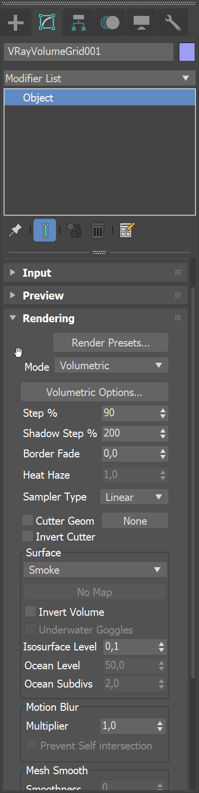
Rendering
Render Presets... – Opens a menu for loading and saving different presets. The following options are available:
-
Load from File...
-
Save to File...
-
Fire/Smoke from Phoenix FD
-
Fire/Smoke from FumeFX
-
Fire/Smoke .vdb from Houdini
-
Liquid .vdb from Houdini
-
Fire/Smoke .vdb from Maya Fluids
Mode – Specifies the method for visualizing the grid content. For fire/smoke, select a Volumetric method. For liquids, select a geometry method.
Volumetric – Visualizes the content as a standard 3ds Max atmospheric. This method is used mostly for fire and smoke.
Volumetric Geometry – This method requires V-Ray. Used to export deep images and render elements such as normals, velocity, multi matte, etc. It produces the same result as the Volumetric option by using procedural geometry made up from multiple transparent layers.
Approximate and Approximate+Shadows options for the Scattering parameter in the Smoke Color window are not supported in Volumetric Geometry mode.
For a complete list of the supported Render Elements in both Volumetric and Volumetric Geometry mode, please check the V-Ray Render Elements Support page.
Volumetric Heat Haze – Produces the same result as the Volumetric Geometry option, and also adds a heat haze effect when used with the Heat Haze parameter. Note that you might need to increase the Max depth of a VRayMtl with refraction in case it intersects with the Heat Haze shader. For more information, see the Heat Haze example below.
Isosurface – Produces a procedural isosurface without polygons at render time using the Surface section options. Compared to the Mesh mode, the result is always smooth but takes longer to render.
Mesh – The content is converted into a standard 3ds Max mesh using the Surface section options. This mode is mostly used for liquids, but can be applied to thick smoke using a scatter material or to plumes of smoke to create effects such as large underwater bubbles.
Ocean Mesh – The grid content is extended to a flat area, fitting the camera's view. In most cases, this mode is used with a displacement texture such as the Phoenix FD Ocean Texture.
Cap Mesh – Only the upper liquid surface is rendered. This mode can be used for swimming pools and other placid liquid surfaces.
The ocean surface can be generated only when the liquid touches the sides and the bottom of the grid, which act as a container for the liquid. The detail of the mesh extension around the simulator depends on the camera resolution - for each pixel of the viewport or the rendered image, one or several polygons are generated, depending on the Ocean Subdivisions option.
Volumetric Options – Opens the Volumetric Render settings window which contains the following rollouts:
-
Fire – Controls the emissive (fire) color of the volumetric shader, and the light emitted by the simulator.
-
Smoke Color – Controls the diffuse color of the volumetric shader.
-
Smoke Opacity – Controls the transparency part of the volumetric shader.
Step % – Specifies the ray marching step of the camera rays as a percentage of the cell size. As the renderer traces rays through the Volume Grid, this value controls how often to get information from the grid. If the this value is more than 100, some cells start getting skipped and artifacts may appear. If rendering volumetrics with a specific transparency curve, a lower percentage might be necessary so that fine details are not lost. On the other hand, increasing the this value increases the rendering speed. This parameter is used when Mode is set to Volumetric, Volumetric Geometry, Volumetric Heat Haze and Isosurface modes. For more information, see the Step % example below.
Shadow Step % – Specifies the ray marching step of the rays used to evaluate the lighting (shadow rays) as a percentage of the cell size. Usually, this value can be higher than Step %, as generally shadows do not need so much detail. Increasing the Shadow Step % also speeds up rendering performance, particularly with dome and area lights.
Fade out – Makes the content near the grid's boundaries more transparent to prevent sharp edges from being rendered. This parameter controls how far from the boundaries the transparent effect should start, in voxels.
Heathaze – Traces the ray changing direction according to the gradient of the Surface channel. A value of 1 corresponds approximately to the normal heat haze in the air caused by the temperature. If smoke or another channel is selected as the source, a larger value might be necessary to achieve a visible result. A value of 0 produces no heat haze. This parameter is available only when Mode is set to Volumetric Heat Haze. For more information, see the Heat Haze example below.
Sampler type – Determines the blending method between adjacent grid cells.
Box – Displays cells as cubes. There is no blending between neighbor cells. This is the fastest mode.
Linear – Linear blending occurs between neighbor cells to smooth out the fluid's look. Sometimes this mode may unveil the grid-like structure of the fluid. Up to 20-30% faster than the Spherical option.
Spherical – Uses special weight-based sampling for the smoothest looking fluid. With increasing resolution, the visual advantage of this method over the Linear method becomes less noticeable.
Cutter Geom – When enabled, rendering occurs only inside the selected geometric object's volume. If Fire Lights are enabled, only those inside the cutter are rendered. Note that the Cutter Geom does not work when the render Mode is set to Volumetric Geometry.
Inverse Cutter – When enabled, rendering occurs only outside of the render cutter. This is not the same as a cutter with inverted geometry because any rays that do not intersect the cutter are shaded as well.
If using a Cutter Geom for a liquid pouring into a glass or otherwise contained into another refractive object, you may need to set the Mode to Isosurface. By default, the mode is set to Mesh which may produce artifacts in the rendered image.
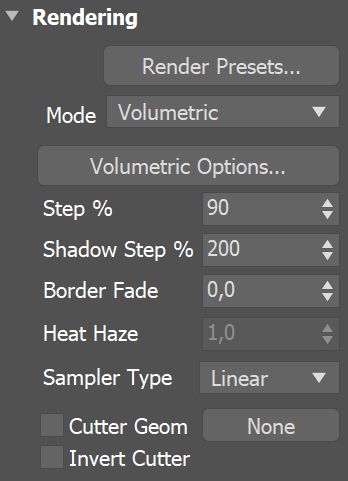
Example: Step %
This example shows how the Step % value can be used to improve the quality of the ray-marching.
The Step % value is set to 50 for the first image, and 150 for the second image.
50150
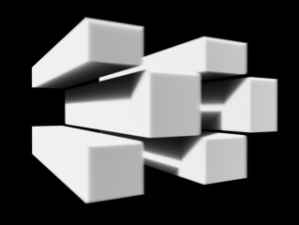
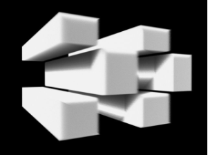
Example: Heat Haze
Heat Haze adds refraction at each ray-marching step through the volume.
To turn on heat haze, choose
Volumetric Heat Haze
as the
Render Mode
, and set the
Heathaze
parameter to a value greater than 0.
offon
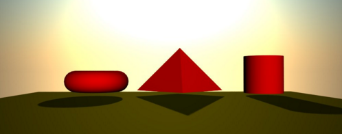
Heathaze adds refraction at each ray-marching step through the volume. This only affects the camera's view. Heat haze does not affect shadows cast through a volume.
Surface
This section controls the conversion of the grid content into geometry. If Mode is set to Mesh, Ocean Mesh, Cap Mesh or Isosurface, the Surface channel needs to be set and an appropriate Isosurface Level must be chosen from this section.
The controls in this section also denote the surface used in Gradient and Surface-driven displacement. This way it can affect all render modes, not just the surface modes.
The technique for generating the surface is based on the isosurface concept. The resulting surfaces are mostly used to render liquids, but can be used for smoke and fire as well to create effects like underwater bubbles, freezing fire, etc.
Surface – Specifies the channel that defines the surface of the fluid. It is used for solid rendering and displacement.
Texture - The values of a custom texture define the liquid surface;
Liquid/Temperature - The Liquid/Temperature channel defines the liquid surface. Temperature is typically in the range 0-1 for Liquid simulations and 600-2000 for Fire / Smoke simulations;
Smoke - The Smoke channel defines the liquid surface. Smoke is typically in the range of 0-1 for Fire / Smoke simulations;
Speed - The Speed channel defines the liquid surface. Speed channel output has to be enabled for this to work. Speed is calculated as the length of the velocity vector for each voxel;
Fuel - The Fuel channel defines the liquid surface. Fuel channel output has to be enabled for this to work.
Texture – If the Surface Channel is set to Texture, this slot specifies the texture. In Mesh, Ocean Mesh, Cap Mesh and Isosurface render modes, the selected map completely replaces the cache files that have been loaded, if any.
Invert Volume – By default the values above the surface level are considered internal. When enabled, this option swaps the inside and outside.
Underwater Goggles – Available only when Mode is set to Ocean Mesh or Cap Mesh. This option is designed to be used when the camera is placed under the water in Ocean Mesh or Cap Mesh mode. When enabled, a few polygons are added in front of the camera, and the grid content is kept outside of the resulting mesh. The result is similar to real underwater goggles in that the field of view shrinks.
Isosurface Level – Allows you to specify a threshold value for the generation of the liquid surface. Grid cells below this value are ignored. By default, the Isosurface Level is set to 0.5 and should only be modified if there is flickering in the generated geometry. Isosurface Level is used only in Isosurface, Mesh, Ocean Mesh and Cap Mesh Modes.
Ocean level – When Mode is set to Ocean Mesh or Cap Mesh, this value specifies the level to be considered the water level.
Ocean subdiv. – Used with the Ocean Mesh and Cap Mesh rendering modes. When generating the far areas of the surface, this determines how many vertices are generated for each pixel of the image. Like with V-Ray subdivisions, the square of the parameter value is used. For example, if you increase the subdivisions twice, the vertices count grows four times. For more information, see the Ocean Subdivisions example below.
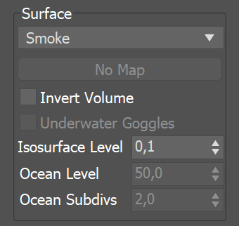
Example: Ocean Subdivisions
The following example shows how increasing the Ocean subdivisions twice makes the vertices count to grow four times:
28
Motion Blur
To render your simulation with Motion Blur, make sure that your cache files contain a Velocity field and that it is properly remapped to the internal V-Ray Volume Grid Velocity channel in the Input → 3rd Party Channels Mapping dialog.
Multiplier – Specifies a multiplier that affects the strength of the motion blur. May also be a negative value.
Prevent self intersection – In certain cases, the shifted vertices might penetrate the opposite side of the geometry. When enabled, this option prevents such situations. The self-intersection analysis is expensive, so enable this parameter only when an intersection is obvious.
When rendering regular meshes with motion blur, the entire mesh is moved along its transformation path back and forward in time, and so each individual vertex of the mesh follows this path. However, when rendering a meshed surface, for each rendered frame a new mesh must be built from the voxel grid, and so it usually has a different number of vertices than the previous and the next frame. Because of this, individual vertices cannot be traced back or forward in time between frames. Instead, motion blur of fluid meshes uses the velocity of vertices which is recorded by the simulation, and moves each vertex back and forward in time along the vertex velocity. This is why the generated liquid mesh does not support frame sub-sampling for motion blur. This may cause a mismatch between the liquid and transforming/deforming objects in your scene that interact with it. The fluid mesh is generated from data at the exact rendered frame and fluid data for the preceding or following frames is not used, unlike regular deforming meshes. As a consequence, the liquid and the objects in your scene will synchronize best if those objects do not use additional geometry samples for motion blur.
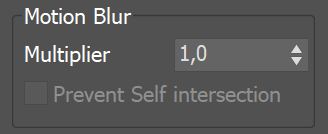
Mesh Smooth
Smoothness – Specifies the number of smoothing passes. The higher the value, the smoother the result, but the mesh will require more time to calculate. Used when Mode is set to Mesh, Ocean Mesh, or Cap Mesh to reduce the roughness of the mesh.
Use Liquid Particles – Enables particle-based smoothing of the mesh. It requires Liquid particles to be simulated and exported to the cache files. This method overcomes the limitations of the basic smoothing without particles, which can flicker in animation and cause small formations in the mesh to shrink.
Particle Size – Used to make the liquid thicker or thinner. Works only when Use Liquid Particles is enabled. This parameter specifies the distance from the mesh surface to the particle centers.
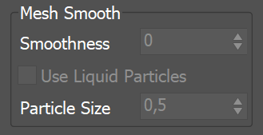
Displacement
Displacement is a technique intended to add detail to the simulation during rendering. The idea of the Phoenix displacement is similar to the usual geometry displacement: a texture is sampled, and the corresponding point of the fluid volume or surface is shifted in a direction at a distance determined by the texture. You can plug any V-Ray, 3ds Max or Phoenix texture maps.
You can use the Phoenix FD Simulator's Mesh Preview option to check how the attached displacement map is affecting the surface when Mode is set to Mesh, Ocean Mesh or Cap Mesh.
Enable – Enables the displacement effect.
Multiplier – Specifies the displacement amount.
Map | displ2 – Specifies the map used to displace the fluid mesh or Isosurface. V-Ray automatically detects if a monochrome texture is used and displaces the surface along its normals, or if a colored texture is used and treats it as a 3D vector displacement. If a monochrome texture is used, black color with value of 0.0 means no displacement, positive colors extrude the surface outwards, and negative colors subside the surface. In 3D vector mode, the texture is expected to be in the format used for V-Ray Tangent Vector displacement, where X and Y of the texture are 0.5-based, and the Z direction is 0.0-based. Such a texture is the Phoenix FD Ocean Texture.
Vertical Fade Level – Specifies how high above the Ocean Level the displacement stops having effect. This option is needed for ocean simulations where you have liquid flying or splashing high above the ocean surface, so that the ocean displacement affects only the calm ocean surface, but does not displace the liquid flying high above the ocean, or you will be able to see small pieces of liquid move up and down as they fly due to the ocean waves displacement. Above the Vertical Fade Level there is no displacement at all, and below it the displacement is strongest near the Ocean Level and is gradually reduced moving up from the ocean surface. This parameter is a percentage of the grid height, just as the Ocean Level option.
Fade Above Velocity – If the fluid velocity (in voxels/sec) in a voxel is higher than this value, there is no displacement at all. When the velocity is lower than this value, the higher the velocity, the weaker the displacement is. This allows you to suppress displacement for the fast moving parts of the fluid where the displacement visibly disturbs the motion in an unnatural manner, and thus you can have only the still ocean surface displaced with waves. This option requires a Velocity channel to be present in the loaded cache files.
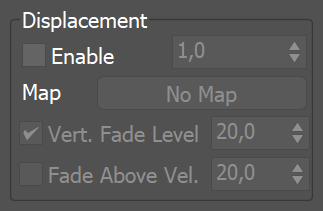
Example: Surface Driven vs. Vector Displacement
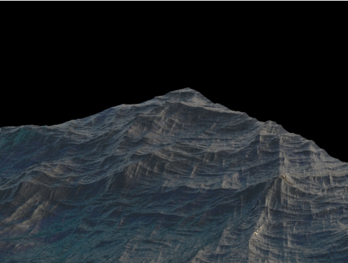
Surface driven displacement
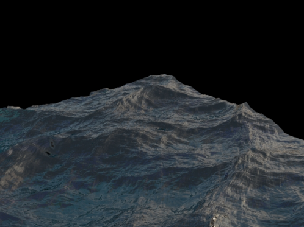
Vector displacement
Example: Advection
Regular smoke and fire, 5M cells
Advection displacement with the simulation's own velocity,
using a PhoenixFDTexmap and multiplied by a noise map
Example: Advection Displacement Maps
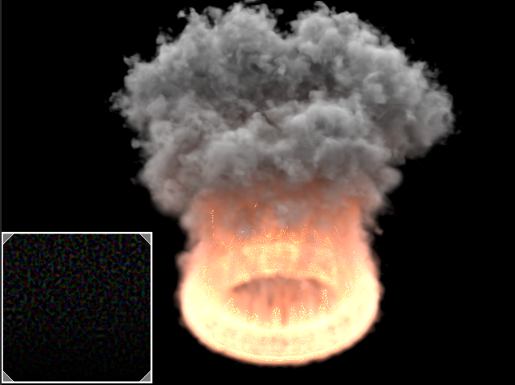
Advection displacement with a vector map between -1 and 1
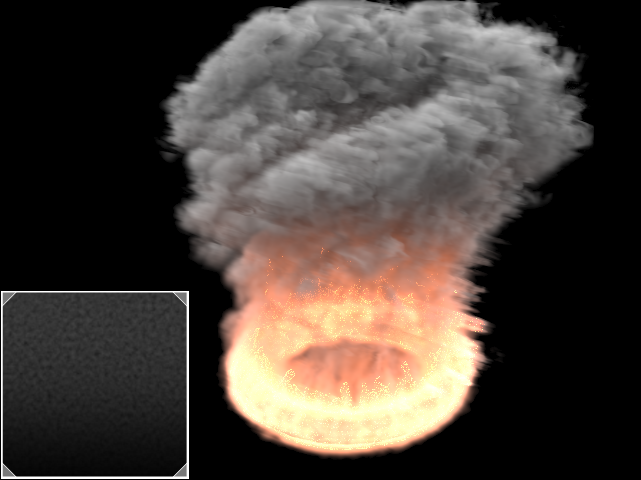
Advection displacement with a monochrome map between 0 and 1
Example: Volumetric Displacement
A grid with 24 million cells with applied displacement. This resolution is not enough by itself for a convincing result.
Enable parameter off for displacement
Enable parameter on for displacement